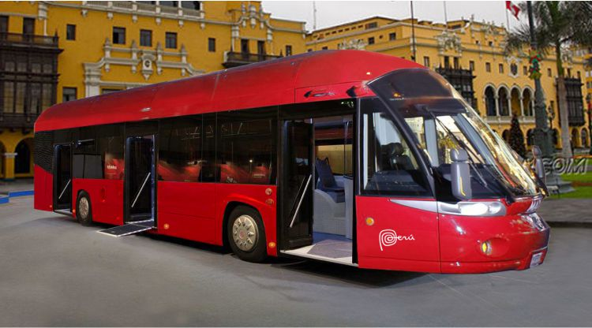
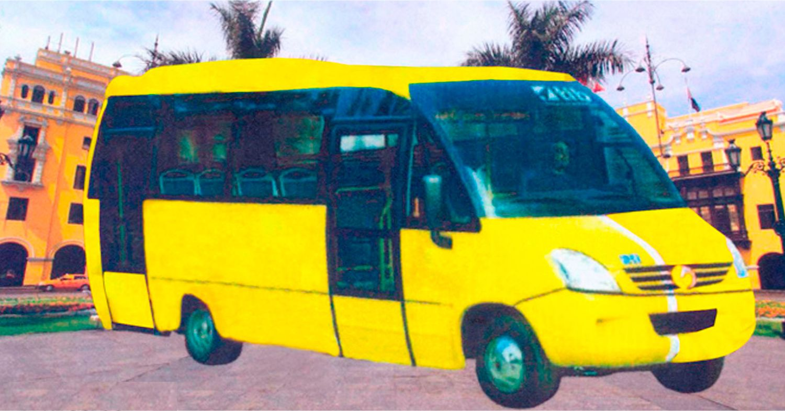
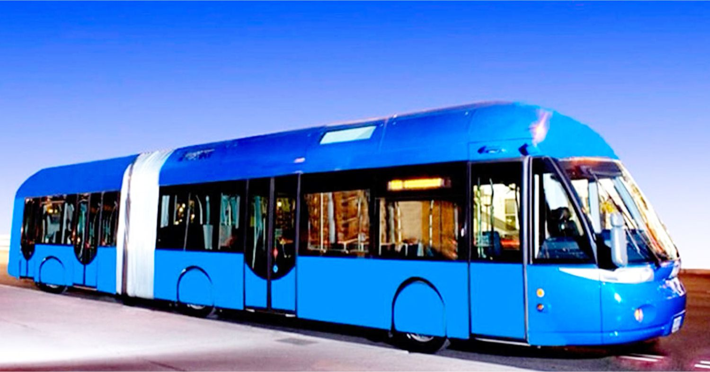
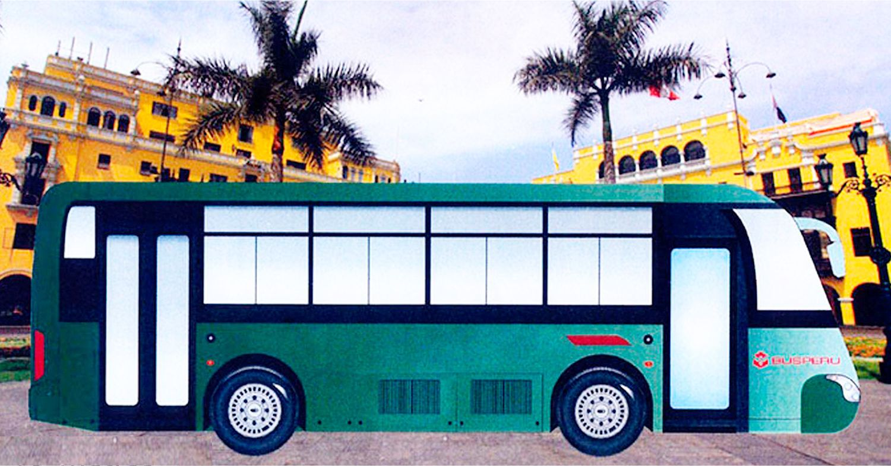
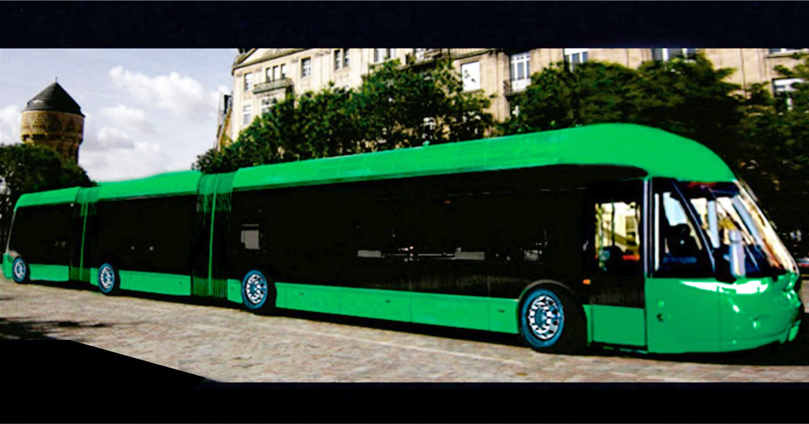

Buses
Mejora de transporte
    Este proyecto busca una mejora en el transporte aportando nuevas ideas para los buses adaptadas al contexto en el que se moverán. Proponiendo así diferentes tamaños (7, 10, 13.2, 18 o 30 metros).
Capricornio Business Group S.A. es una sociedad financiera peruana que dirige, administra y supervisa un conjunto de empresas dedicadas a diversas actividades económicas e industriales de propiedad de sus socios del holding. Nuestro objetivo es integrar proveedores nacionales y extranjeros, generando puestos de trabajo, propiciando así la mejora del nivel de inclusión social en el país.
Ser el primer holding nacional, fabricante de buses y camiones con motor dedicado a Gas Natural GNC, GNL y Eléctricos; con los estándares de calidad del primer mundo.
Satisfacer las necesidades del mercado peruano y regional integrando proveedores nacionales y extranjeros, generando puestos de trabajo, propiciando de ésta manera mejorar el nivel de inclusión social en el país.
Este holding pretende tener un grupo de empresas, que es lo fundamental, con lo que se llama economía social de mercado, en la que el factor humano debe tener la misma prioridad que el capital, consiguiendo una verdadera armonía en el negocio. El grupo de empresas y su división bancaria en formación, garantizaría el flujo de caja necesario para la plena fertilidad empresarial:
Este modelo como unidad jurídica de riesgo está fuera de los márgenes, pero como unidad económica real de riesgo, debido a su enorme diversificación empresarial, su riesgo es mínimo compensado y ciertamente inferior de algún banco que puso casi todos sus huevos en una cesta económica del sector industrial por poner un ejemplo.
Los beneficios están ligados al crecimiento en el supuesto estratégico fundamental de que las inversiones que promueven el crecimiento tendrán sus resultados positivos a largo plazo, lógicamente sus tasas de crecimiento superan ampliamente y sistemáticamente a los preocupados por estrategias de reparto a corto plazo.
Las Asociaciones Público – Privadas (APP), son modalidades de la inversión privada en las que se incorpora experiencia, conocimientos, equipos, tecnología y se distribuyen riesgos y recursos, preferentemente privados, con el objeto de crear, desarrollar, mejorar, operar o mantener infraestructura pública, proveer servicios públicos y/o prestar los servicios vinculados a estos que requiera brindar el estado.
Es de conocimiento también, que para las APP Autofinanciadas, las facultades del organismo promotor de la inversión privada se ejercen en forma directa a través del órgano del gobierno regional o local designado a tales efectos, toda vez que las entidades públicas relacionadas al servicio corresponde a los niveles de gobierno de ámbito local, regional y nacional.
Este proyecto está preparado dentro del marco de lo dispuesto en el Decreto Legislativo N° 1326, ley marco de Asociaciones Público – Privadas y proyectos en activos y su reglamento aprobado mediante Decreto Supremo N° 240-2018-EF, contrato que será revisado y aprobado por PROINVERSIÓN y por el Ministerio de Economía y Finanzas del gobierno nacional.
Incrementar la eficiencia del sistema de transporte, proporcionado en la reducción de la contaminación del medio ambiente, reducción de los niveles de accidentes de tránsito y el aumento de la accesibilidad y movilidad de la población utilizando buses de origen europeo de las mejores marcas con diseño aerodinámico, para el transporte de personas, con motor dedicado a gas natural GNC y GNL EURO VI y/o eléctricos, caja de cambios automática, aire acondicionado, etc. de última generación, así como el capital suficiente para:
La administración de las troncales que sean necesarias con sus respectivas rutas complementarias (alimentadoras y estructurales), serían administradas a través de un contrato de servicios que suscribiría la operadora BUSPERÚ S.A.C. empresa del holding Capricornio Business Group S.A. Esta administración estaría conformada por profesionales con experiencia en transportes BRT internacional y local, que constaría de:
Esta iniciativa privada autofinanciada, incluye 15 negocios a través de 15 empresas del holding Capricornio Business Group S.A.:
Luis Ismael Cruz Solis, nacido en Chiclayo y Emma Raquel Dávalos Zavala, en Lima, se conocen en 1960 en General Motors del Perú S.A. contraen matrimonio en 1963 y tienen 4 hijos: Liliana, Jorge, Oscar y Sandro.
Don Luis es contratado por Scania Vabis del Perú S.A. desempeñando cargos importantes, como Gerente de Logística.
Decide independizarse, obteniendo licencia para operar como Agente de Aduana y Operador Logístico.
En 1976 decide emigrar a Europa, es así que, con 35 años llega a la capital española con su esposa y sus 4 hijos, a los pocos días de llegar a Madrid, es contratado por la empresa Minerva S.A. una de las 750 empresas, 22 bancos y 60,000 empleados del Grupo Rumasa, comenzando como vendedor de seguros y llegar a director nacional de ventas, teniendo bajo su dirección a 550 vendedores a nivel nacional.
En 1983, con la llegada al poder del Partido Obrero Español «PSOE» el gobierno socialista expropia el Grupo Rumasa. En 1985, decide regresar al Perú, después de haber completado su formación de empresario, obtener la nacionalidad española para toda la familia y pasaportes de la Unión Europea, lo que les permite viajar por todo el mundo. LLegando al Perú, firma contrato con los granes almacenes norteamericanos Sears Roebuck del Perú S.A. llegando a tener con ellos una concesión en sus tres tiendas en Lima, comenzando hacer empresa con toda la familia.
1989 constituyó Busperú S.A.C.
1971 Centuriones S.R.L.
1997 Master Media Studio S.R.Ltada.
1999 MediaStudio S.A.
2001 Induperú Visual.com S.A.
2009 Busperú Corporation S.A.C.
2010 Busperú Logistic S.R.L.
En 2017 creó Capricornio Business Group S.A. Don Luis fundó 15 empresas para el Gran Proyecto de fabricación de Autobuses y Camiones a Gas Natural y/o Eléctricos, después de 28 años de investigación y tomar conocimiento, con visitas presenciales a 25 fábricas en tres continentes, Europa, América (EEUU) y Asia.
Presidente de Capricornio Business Group S.A.
Ex Gerente General de las empresas
Sus hijos apoyaban en el negocio familiar sirviéndoles el trabajo como complemento en su formación profesional: Liliana en administración y logística, Jorge en ingeniería industrial, Oscar en arquitectura y Sandro en diseño gráfico, web, animación y multimedia, egresado del Toulouse Lautrec.